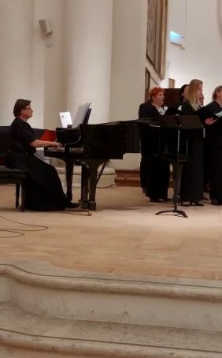
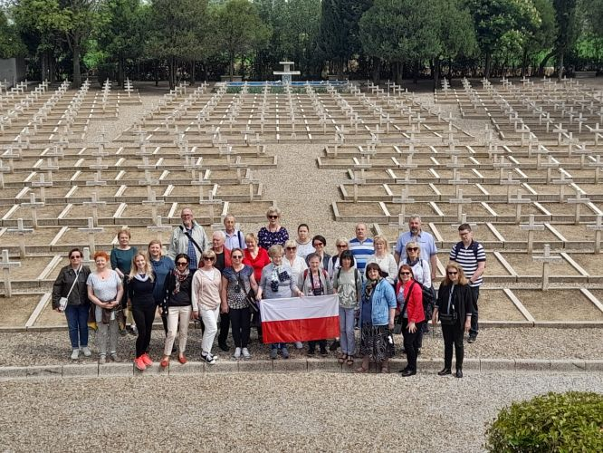

A tymczasem w Cameracie...
.
2022-04-29 do 2022-05-04
Wielicki Chór Camerata, działający pod Patronatem Wielickiego Centrum Kultury, przy wsparciu Burmistrza Wieliczki, w ramach obchodów 25-lecia swojej działalności odbył 25 tournée koncertowe. Tym razem celem wyprawy były Włochy i „odcinek Adriatycki” szlaku II Korpusu gen. Władysława Andersa. Po zdobyciu Monte Cassino II Korpus Polski kontynuował zwycięski marsz, zdobywając m.in. Loreto, Anconę, Bolonię.Choć na trasie Cameraty zabrakło Loreto, to warto przypomnieć, że jest ono nazywane „najbardziej polskim z włoskich miast”. W Loretańskiej Bazylice znajduje się wspaniała kaplica polska z freskami przedstawiającymi chwałę polskiego oręża. Tuż za bazyliką, na trzech tarasach schodzących w stronę Adriatyku jest usytuowany Polski Cmentarz Wojenny, na którym spoczywa 1080 polskich żołnierzy, poległych w 1944 roku w walkach na linii Pescara-Rimini. U stóp cmentarnego ołtarza widnieje napis: „Przechodniu, powiedz Polsce, żeśmy polegli w jej służbie. Oddali ducha Bogu, ciała ziemi Włoskiej, a serca Polsce.”
Z Bazyliką Loretańską wiąże się jeszcze jedna polska historia. Gdy niemieckie bomby spadły na świątynię, wywołując pożar kopuły, pod którą usytuowany jest Święty Domek, polscy żołnierze, narażając życie, weszli na dach bazyliki i po kilkugodzinnej walce z żywiołem, ocalili tę bezcenną relikwię. W czasie akcji żaden z polskich żołnierzy nie zginął i nie został ranny. Polacy dziękowali później Matce Bożej za cudowne pośrednictwo, a papież Pius XII osobiście podziękował polskim bohaterom.

Wielicka Camerata została niezwykle ciepło i serdecznie przyjęta przez władze Fano.
W miejscu, w którym Jan Paweł II sprawował Eucharystię zabrzmiało Gaude Mater Polonia, zaś zwieńczeniem wizyty był koncert w Pinacotece, gdzie wielicki chór pod dyr. Izabeli Szoty, przy akompaniamencie Agnieszki Korczyńskiej, wykonał koncert wspólnie z chórem Polifonico Malatestiano, prowadzonym przez Francesco Santiniego.
W przeddzień Dnia Polonii i Polaków za granicą i Święta Konstytucji 3 Maja Camerata gościła w Bolonii, której wyzwolenie miało decydujące znaczenie dla ostatecznej klęski Niemiec na froncie włoskim. Jako pierwsi wkroczyli do Bolonii polscy żołnierze gen. Andersa, z którego inicjatywy powstał później Polski Cmentarz Wojenny, największy spośród czterech polskich cmentarzy we Włoszech, gdzie spoczywa 1432 żołnierzy II Korpusu Polskiego. Toteż Camerata pierwsze kroki skierowała właśnie tam, śpiewając polskim żołnierzom Hymn Armii Krajowej oraz Mazurka Dąbrowskiego. Warto zaznaczyć, iż wśród członków wielickiego zespołu jest córka żołnierza, który wraz z gen. Andersem przemierzał włoski szlak.

W Bolonii Camerata śpiewała dla Polaków w Polskim Kościele pw. Matki Bożej Deszczowej.
Wielość polskich akcentów jak obraz Jezu ufam Tobie, czy bł. Anieli Salawy (patronki wspólnoty polskiej w Bolonii), fantastyczne przyjęcia przez ks. Tomasza, zadecydowały o niezwykłej atmosferze podczas Mszy Św. i koncertu, która dostarczyła wielu wzruszeń zarówno wykonawcom, jak i publiczności. W programie koncertu nie zabrakło pieśni patriotycznych, ludowych i sakralnych. Camerata, w nawiązaniu do wydarzeń na Ukrainie, za pośrednictwem Naszego Wielkiego Rodaka Jana Pawła II, wielkiego orędownika pokoju i praw człowieka, wspólnie z nim wołała: Dona nobis pacem.

Tekst Izabela Szota

© Stowarzyszenie Muzyczne Chór Camerata Wieliczka
Prowadzenie strony oraz zdjęcia: Małgorzata Wysocka